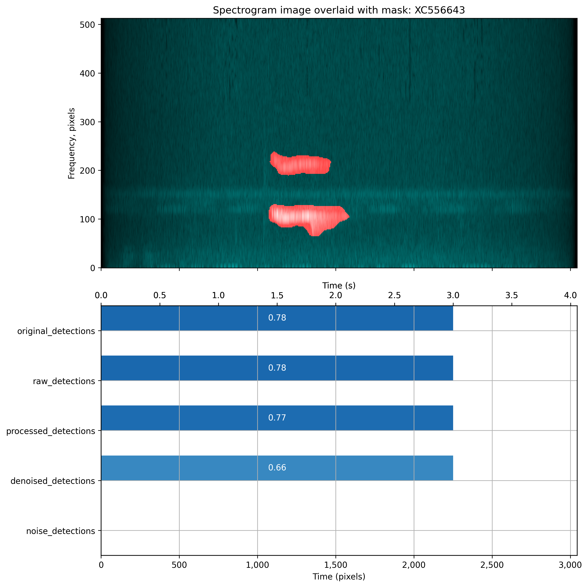
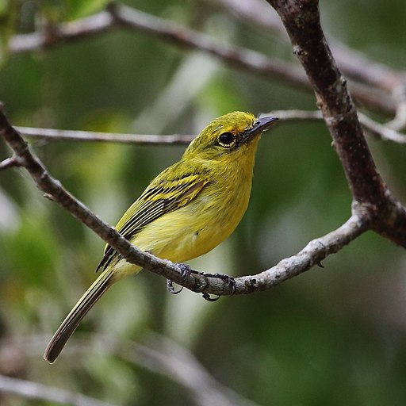
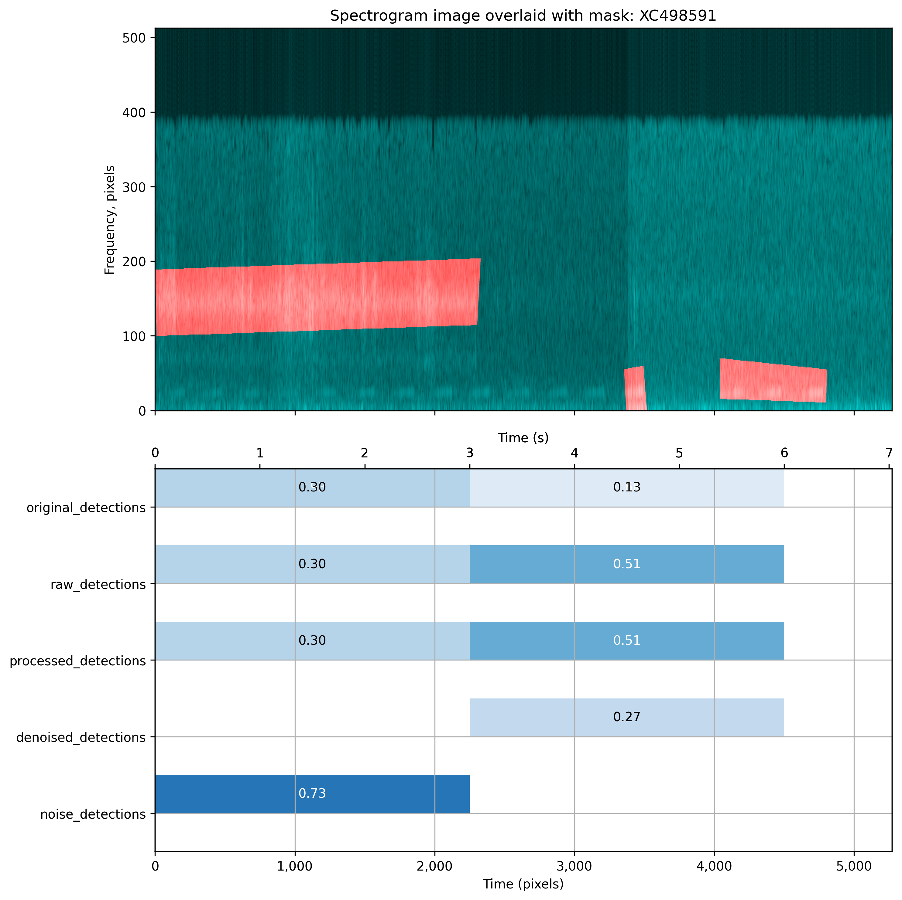
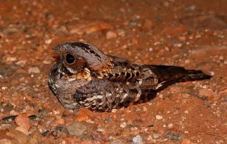

For more information about the recording, visit xeno-canto: here.
Original recording: XC556643
Denoised audio: XC556643
Image of a spectrogram of the original audio with the expert-created mask overlaid in red. The bird sounds are overlaid by the mask (in red) and look like the mask has been 'painted' by hand. The mask appears to spread beyond the boundaries of the bird sounds that it covers.
Underneath the spectrogram is a summary of the BirdNET detections. This shows that BirdNET detects the bird species in the original audio and also in the denoised audio (fourth row), albeit that the confidence level fell from 78% to 66%. No bird detections were found in the noise-only audio (i.e. what is left after removing the denoised audio).
This is an image of an ochre-lored flatbill (Tolmomyias flaviventris) or yellow-breasted flycatcher:
 Hector Bottai, CC BY-SA 3.0, via Wikimedia CommonsFor more information about the recording, visit xeno-canto: here.
Original recording: XC498591 - As can be heard, this is a very noisy recording and the volume level changes part way through
Denoised audio: XC498591 - The expert-created mask does only covers a few of the calls
Image of a spectrogram of the original audio with the expert-created mask overlaid in red. The left rectangular part of the mask in red appears to cover noise rather than the bird sounds. Even then its boundaries spread beyond the main part of the noise. The bird sounds appear as 16 calls towards the bottom of the image. The middle red mask overlaps one of the calls and again its border spreads beyond the sound call. The right-hand mask overlays three bird calls. At around two-thirds of the way across the image there is a vertical line that suggests the "volume" on the recording has been turned up.
Underneath the spectrogram is a summary of the BirdNET detections. This shows that BirdNET detects the bird species in the original audio (with a 30% confidence level in the first three-seconds and 13% in the second three-seconds). No bird species were detected in the denoised audio (fourth row) in the first three seconds. A bird species was detected in the second three second with a 27% confidence level. Bird detections were found in the noise-only audio (i.e. what is left after removing the denoised audio) in the first three seconds but not the second three seconds. This ties in with the left hand part of the mask that appears to just cover noise, so leaving the actual birds sounds in the noise-only recording.
This is an image of a fiery-necked nightjar (Caprimulgus pectoralis):
 Dave Maguire, CC BY-SA 3.0, via Wikimedia Commons{kind=link}
{kind=link}